Nestled in Japan's pristine nature, Therman Wellness Resort delivers an unparalleled high-end retreat focused on mind-body rejuvenation, bespoke healing therapies, and refined Japanese hospitality.
A CUE TO FOCUS
Focus begins by returning attention to the present.
NEUROCUE transforms everyday hydration into a simple
signal—a moment to drink, reset and begin again.

Simply Mix
with Water
Pour one stick into 450–500 mL of water and shake until fully dissolved.
No complicated preparation and no additional equipment are needed.
What begins as an ordinary bottle of water becomes a deliberate cue to pause,
hydrate and prepare for what comes next.
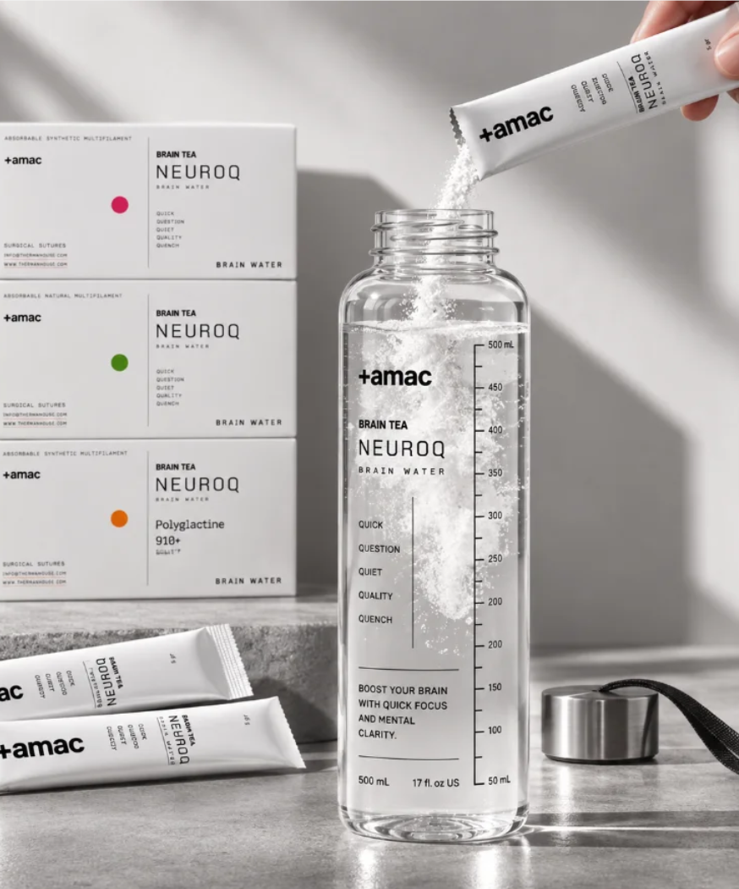
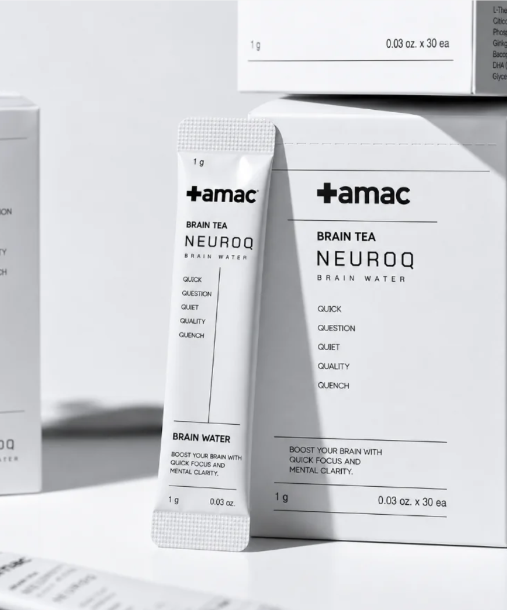
Formulated
for
the Focus Routine
Each serving brings together 35–40 mg of caffeine, 80–100 mg of L-theanine and low-sugar electrolytes.
Rather than relying on intensity alone, the formula is built around balance—combining gentle stimulation, hydration and a calmer approach to sustained attention.
Focus in
a Portable Format
Individually packed sticks make the routine easy to carry and simple to repeat. Keep one beside your desk, inside your bag or wherever concentration may be needed.
A small format creates a clear transition between one part of the day and the next.
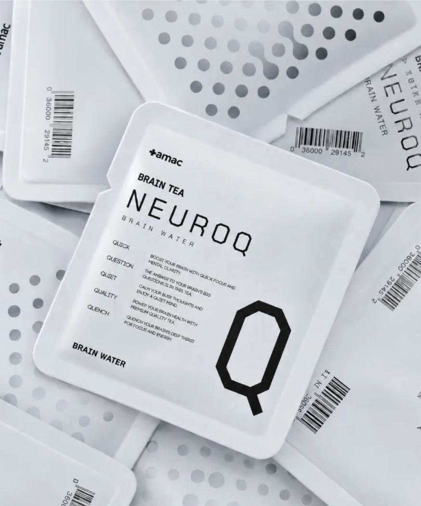
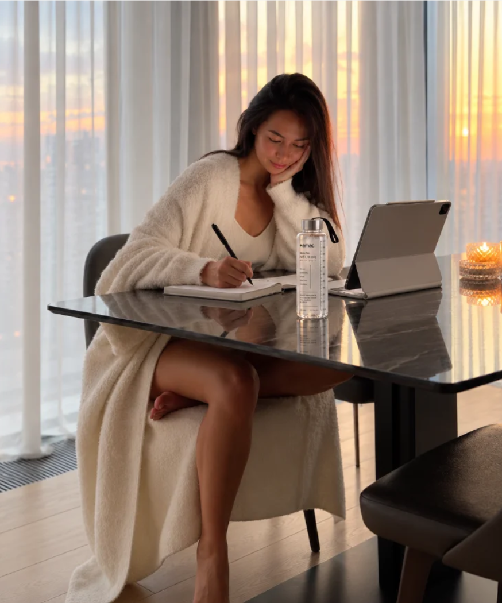
The Morning
Work Ritual
The first task of the day can set the rhythm for everything that follows. Mix NEUROCUE before opening the day’s work and take a moment to decide where your attention belongs.
Hydration becomes the beginning of a more deliberate morning.
Insight Before Assertion
NEUROCUE begins with research rather than trend. Studies related to attention, caffeine,
L-theanine and hydration are reviewed and translated into a routine made for everyday life.
THE AFTERNOON RESET
When the energy of the morning begins to fade, another strong coffee is not always what the day needs.
NEUROCUE offers a lighter second cue—combining measured caffeine with L-theanine, electrolytes and water to help the afternoon feel more composed.
ROUTINE,
DESIGNED
Attention changes throughout the day. It may be needed when work begins,
when energy dips or before a task that requires sustained concentration.
NEUROCUE fits into these transitions as a repeatable signal: pause, add water and return to what matters now.
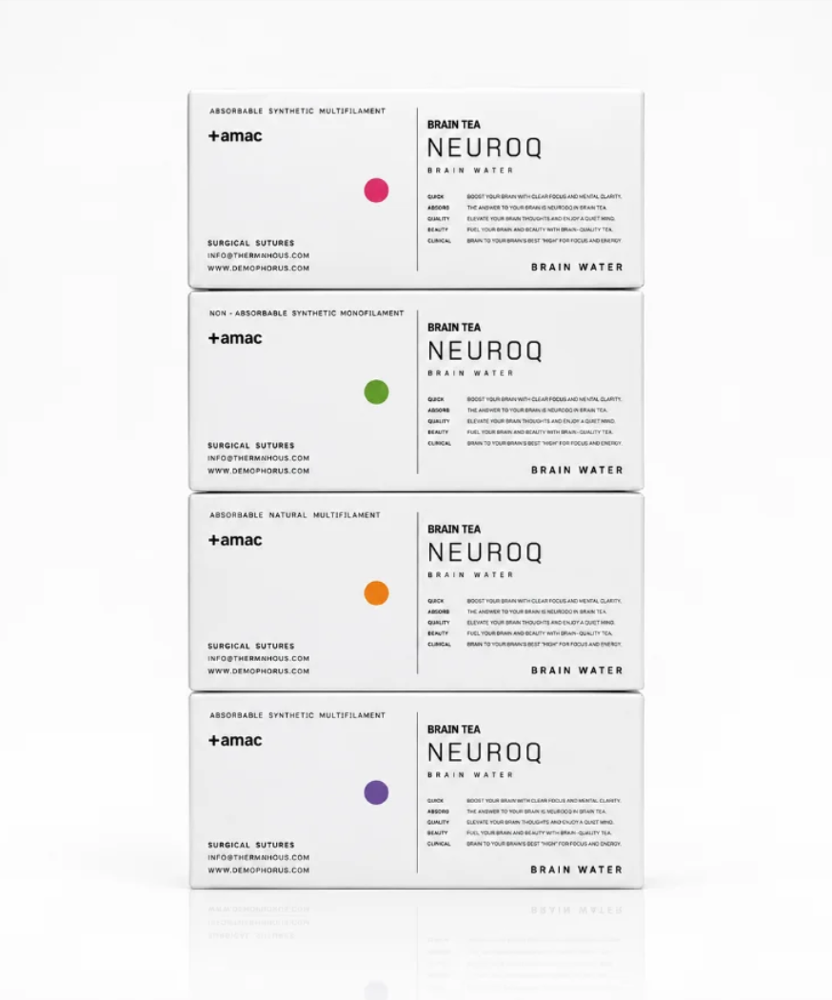
Only What the Moment Needs
The compact format removes unnecessary decisions from the routine,
allowing focus to begin with one simple action.
Focus
Beyond the Desk
Concentration is not limited to intellectual work.
Movement also asks for awareness, timing and the ability to stay with the present moment.
NEUROCUE brings the same focus ritual into active days,
supporting hydration before practice, training or time spent outdoors.
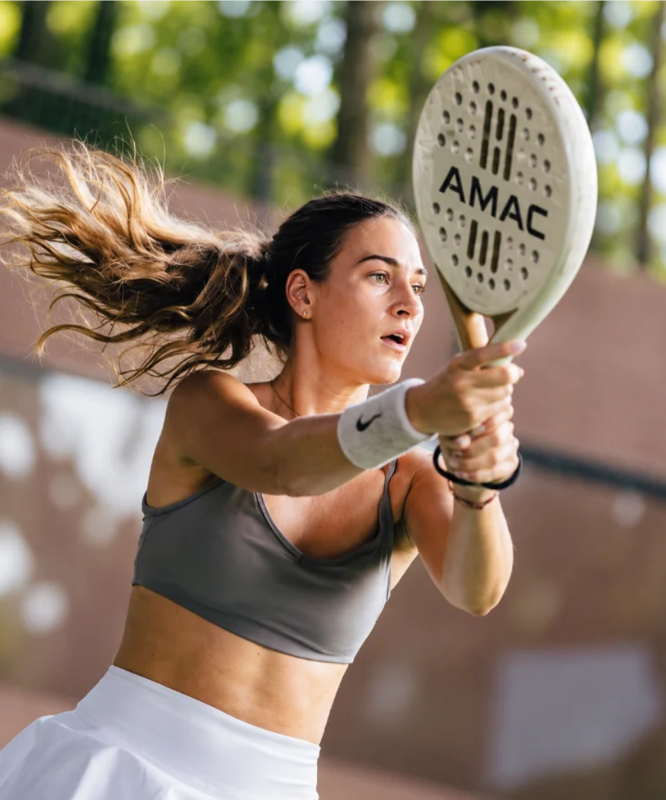
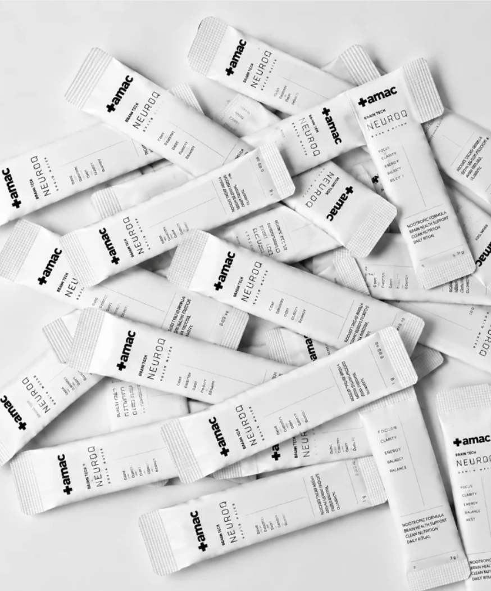
A Routine Within Reach
A demanding schedule rarely unfolds exactly as planned.
Individual sticks allow the focus ritual to move naturally between work, travel and exercise.
Keep them within reach and use each serving as a small, intentional break in the pace of the day.
LIGHT, CLEAN
Lemon brings a crisp beginning while white peach leaves a softer finish.
The flavour is clean and restrained, created to remain refreshing
throughout a full bottle of water.
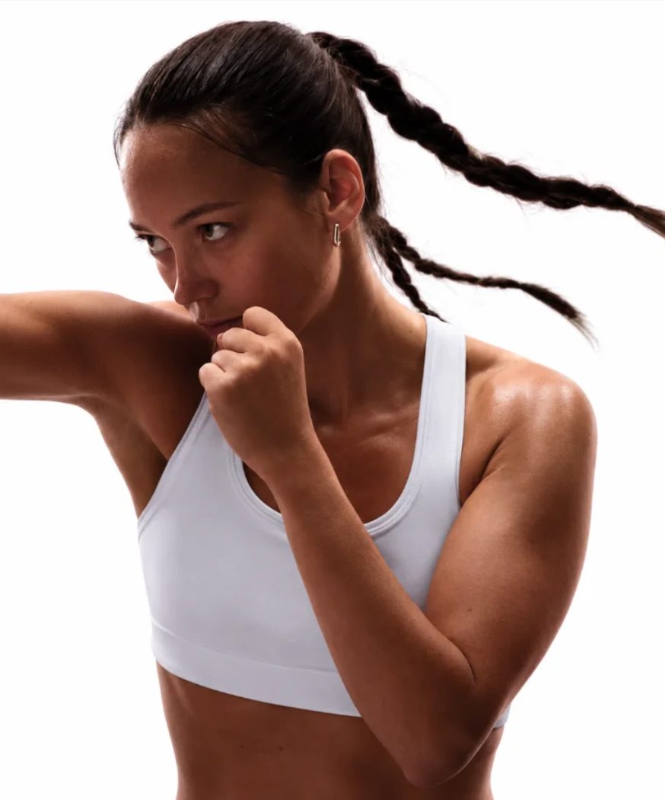
Attention Through
the Body
Focused movement draws the mind away from scattered thought and back toward the body.
Breath, timing and physical response become the only things that matter.
NEUROCUE complements this active rhythm with hydration that feels purposeful,
clear and easy to carry forward.
Create the Transition
Long periods of concentration begin before the work itself.
Preparing NEUROCUE creates a visible transition from interruption to intention.
Set the bottle beside you, clear the immediate space and allow the first sip to become the cue
that the next period belongs to one task.
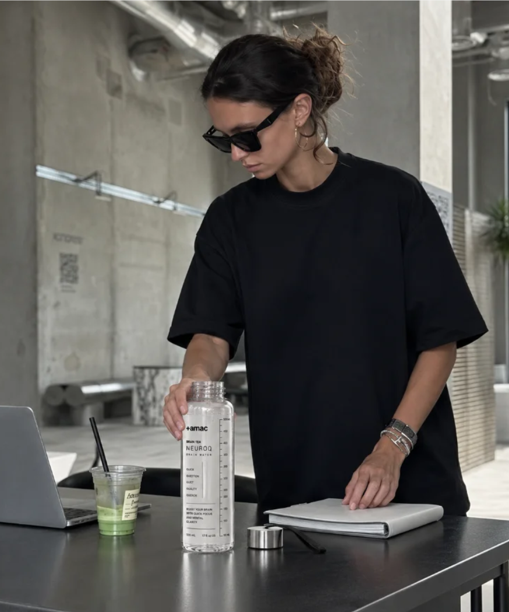
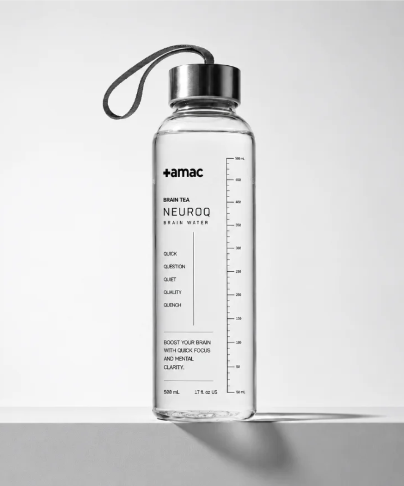
The Bottle as
Part of the Ritual
The measured bottle makes the preparation clear: one stick with 450–500 mL of water.
Its transparent form keeps hydration visible throughout the day,
turning progress into something that can be noticed rather than forgotten.
Every Detail Kept Close
A secure cap, carrying loop and magnetic holder keep the bottle easy to use while moving between places.
The functional details remain quiet but considered, allowing the focus
ritual to travel naturally from the room to the office, studio or outdoors.
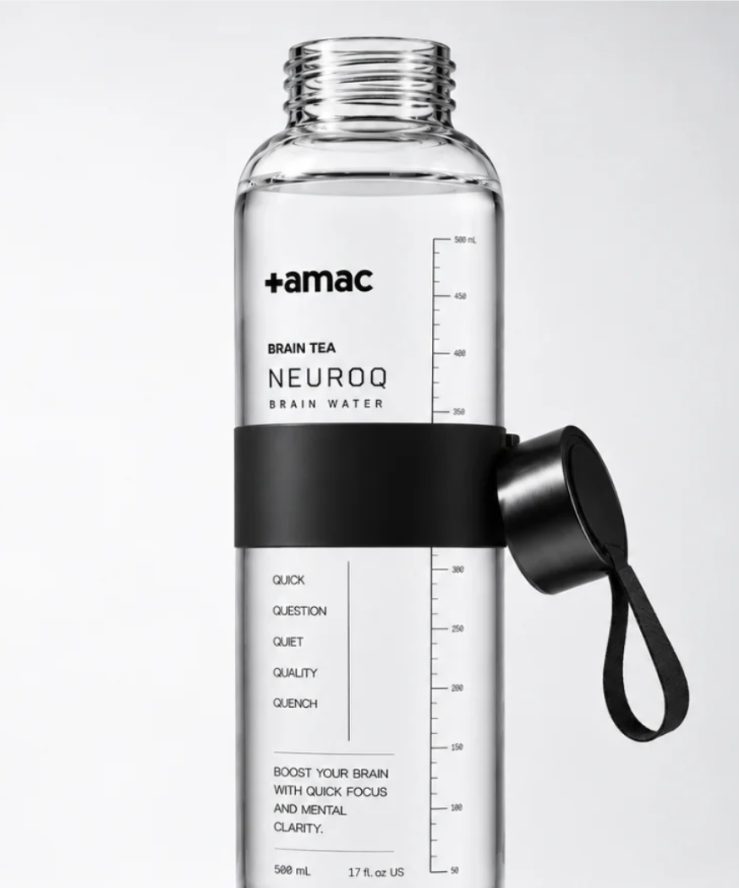
From THERMAN into Everyday Life
The clarity experienced at THERMAN does not need to end with the stay.
NEUROCUE carries the same philosophy into daily life through one uncomplicated ritual
: add water, pause and return to your intention.